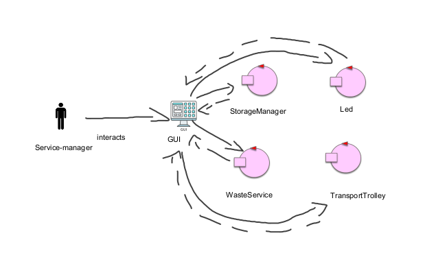
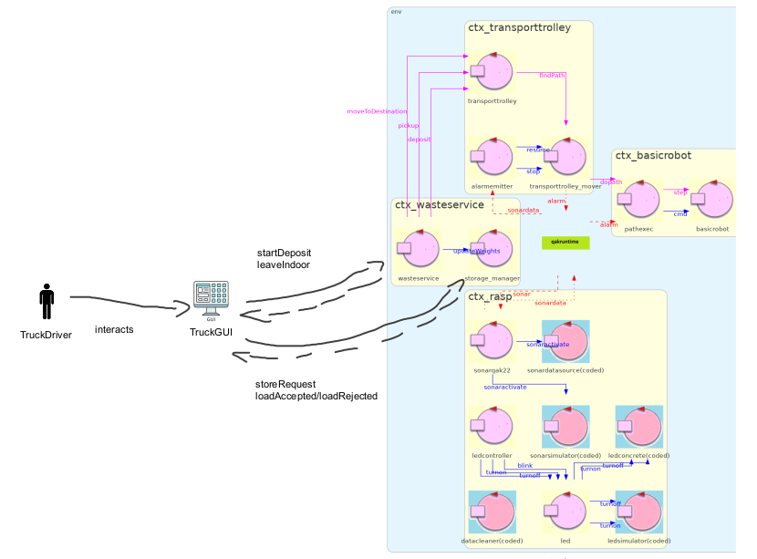
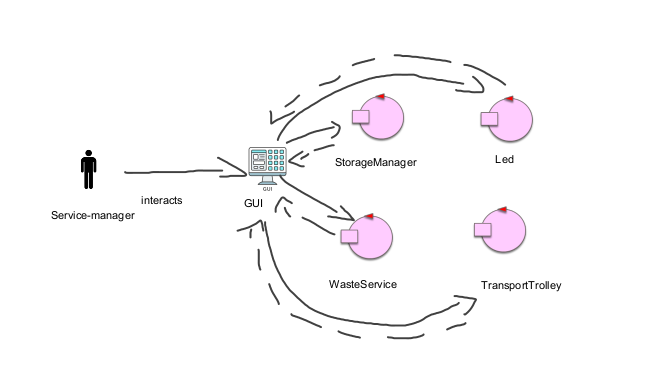

Introduction
Tema finale dell'esame di ingegneria dei sistemi software: WasteService
Requirements
Requirement analysis
Per analisi requisiti generali (fra cui il glossario ) consultare lo sprint1.
Sprint1
Sprint1
Requisiti funzionali¶
Requisiti riguardanti GUI-
All'interno della GUI devono essere visibili le seguenti informazioni:
-
Trolley info: stato attuale del trolley e posizione attuale.
-
Peso container: il peso corrente di ciascun container.
-
Led info: stato attuale del led.
Rappresentazione della posizione del trolley
A seguito di un meeting con il committente si è stabilito che la posizione del trolley deve essere rappresentata nelle seguenti posizioni:- HOME
- INDOOR
- CONTAINER PLASTICA
- CONTAINER VETRO
Rappresentazione dello stato del trolley
Lo stato del trolley può assumere tre valori differenti:- IDLE
- WORKING
- STOPPED
Problemi da analizzare
STATO DI TROLLEY, LED, E BOX
La GUI deve monitorare lo stato di TROLLEY, LED e BOX e bisogna, quindi, stabilire come ottenere tali informazioni.POSIZIONE DEL TROLLEY
La GUI deve essere a conoscenza della posizione del trolley.REALIZZAZIONE DELLA GUI
Che tipo di componente dovrebbe essere la GUI?Problem analysis
STATO TROLLEY, LED E BOX
La GUI deve mostrare a video lo stato di TROLLEY, LED e BOX. Per ottenere queste informazioni si hanno diverse possibilità.Un primo tipo di comunicazione potrebbe essere una forma di polling, nella quale la GUI chiede ai vari componenti i valori interessati ogni intervallo di tempo. In questo caso si avrebbe una GUI che lavora attivamente per richiedere i dati degli altri componenti del sistema.
Si sconsiglia questo tipo di soluzione.
Tenendo in considerazione quello che è stato discusso nello Sprint2 è possibile sfruttare l'osservabilità CoAP degli attori del sistema per aggiornare le varie informazioni della GUI tramite pattern observer e non un lavoro svolto attivamente.
RAPPRESENTAZIONE DELLA POSIZIONE DEL TROLLEY
Tra le informazioni che devono essere mostrate tramite la GUI vi è anche la posizione del trolley in ogni momento.Come anticipato in analisi dei requisiti, il committente ha stabilito che è sufficiente un'informazione approssimata per quanto riguarda la posizione del trolley (INDOOR, PLASTIC, GLASS, HOME).
Per aggiornare la posizione si ricorda che il wasteService emette queste informazioni tramite CoAP.
REALIZZAZIONE DELLA GUI
Essendo che un operatore umano (Service-manager) deve interagire con essa si hanno due possibilità principali:- Applicazione mobile: un'applicazione (che potrebbe essere per Android o IOS) che permetta di accedere alle informazioni specificate precedentemente.
- Applicazione Web: un'applicazione Web, accessibile attraverso browser.
Inoltre, nel caso in cui si realizzi un'applicazione REST, sarebbe facilmente estendibile con una applicazione mobile.
Project
Per la realizzazione della GUI si è optato per realizzare un'applicazione Web, tramite l'utilizzo del
framework Spring Boot.
Per evitare di dover ricaricare la pagina per ottenere l'aggiornamento delle informazioni si è deciso di utilizzare le WebSocket, che realizzano un canale di comunicazione tra due applicazioni, messe a disposizione in modo semplice da SpringBoot.

Per evitare di dover ricaricare la pagina per ottenere l'aggiornamento delle informazioni si è deciso di utilizzare le WebSocket, che realizzano un canale di comunicazione tra due applicazioni, messe a disposizione in modo semplice da SpringBoot.
Lato SERVER
-
Configurer: affinchè l'applicazione Sprint inoltri le richieste di un client al server, è necessario
registrare un gestore utilizzando una classe di configurazione che implementa l'interfaccia
WebSocketConfigurer.
WebSocketConfiguration
In base alla configurazione, il server risponderà, con un'istanza di WebSocketHandler. -
GUIWebSocketHandler: questa classe definisce un gestore custom di messaggi come specializzazione della
classe astratta AbstractWebSocketHandler (o delle sue sottoclassi).
L'handler tiene traccia di ogni sessione di WebSocket attualmente attiva e contiene le CoapConnection ai componenti del sistema da osservare (wasteService, trolley, storageManager). GuiWebSocketHandler
-
GuiApplication: permette a Spring di avviare tutti i componenti necessari.
GuiApplication
-
GuiController: essendo Spring basato sul pattern MVC, il controller permette di smistare
le richieste.
GuiController
- Utils: varie funzioni di utilità per semplificare la creazione di observer CoAP e di inviare i messaggi ai destinatari interessati.
Lato CLIENT
- Interfaccia grafica dell'applicazione.
- Files JavaScript per realizzare la comunicazione tramite WebSocket lato Client.
Architettura finale

Deployment
Per quanto riguarda il deployment di questo sprint si sono creati nuovi file yaml per la distribuzione attraverso dokcer-compose.
In questo caso si sono creati due file diversi:
In questo caso si sono creati due file diversi:
- wasteservice_Sprint3_sameDevice.yaml: contiene tutti i componenti sulla stessa macchina.
- wasteservice_Sprint3_rasp.yaml: permette di lanciare la parte del sonar e led sul raspberry.
- wasteservice_Sprint3_Pc.yaml: permette di lanciare la parte sviluppata nello sprint1 (con le modifiche effettuate in questo sprint) separatamente da led e sonar, in modo che possano essere lanciati in modo distribuito.
| Service | Port |
|---|---|
| WasteService | 8049 |
| TransportTrolley | 8051 |
| TruckGUI | 8080 |
| VirtualRobot | 8090 |
| BasicRobot | 8020 |
| Rasp | 8056 |
| Gui | 8085 |
By Thomas Ambrogini email: thomas.ambrogini@studio.unibo.it